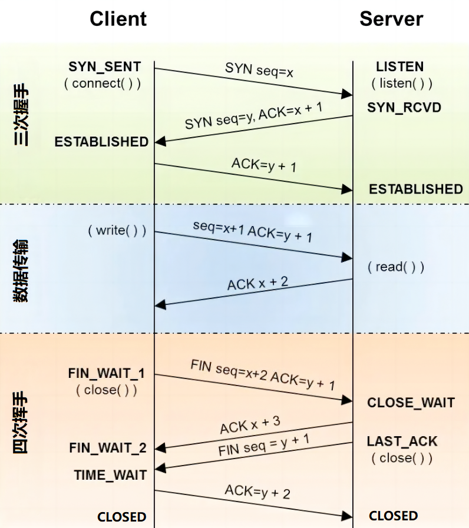

概述
在计算机网络中，TCP是实现可靠数据传输的重要协议。TCP通过三次握手（Three-Way Handshake）来建立连接，通过四次挥手（Four-Way Termination）来终止连接，确保数据传输的可靠性和连接管理的完整性。三次握手确保双方在通信前建立同步连接，防止重复数据包的干扰，确保序列号的同步。四次挥手则确保双方在连接终止时都能完全释放资源，防止数据丢失，并确保网络中不存在旧的数据包，从而避免新的连接受到干扰。理解这些过程对于排查网络问题和设计可靠的网络应用至关重要。
三次握手及四次挥手过程示意图

TCP连接状态
| 状态 | 描述 | 客户端 | 服务器 |
|---|---|---|---|
LISTEN | 表示服务器端的某个socket处于监听状态，可以接受客户端的连接。首先服务器端需要调用listen()以打开一个socket进行监听，状态为LISTEN。有提供某种服务才会处于LISTEN状态，TCP状态变化就是某个端口的状态变化，提供一个服务就打开一个端口。例如FTP服务启动后首先处于侦听(LISTEN)状态。处于侦听LISTEN状态时，该端口是开放的，等待连接，但还没有被连接 | √ | |
SYN_SENT | 在客户端调用connect()以发送连接请求后，等待匹配的连接请求。比如客户端tcp发送一个SYN以请求建立一个连接，之后状态置为SYN_SENT | √ | |
SYN_RCVD | 在收到和发送一个连接请求后等待对方对连接请求的确认。当服务器收到客户端发送的同步信号时，将标志位ACK和SYN置1发送给客户端，此时服务器端处于SYN_RCVD状态， 如果连接成功了就变为ESTABLISHED，正常情况下SYN_RCVD状态非常短暂 | √ | |
ESTABLISHED | 连接建立（数据传输阶段的正常状态） | √ | √ |
FIN_WAIT_1 | 等待远端TCP连接终止请求，或先前的连接终止请求的确认。主动关闭(active close)端应用程序调用close()，于是其TCP发出FIN请求主动关闭连接，之后进入FIN_WAIT_1状态 | √ | |
FIN_WAIT_2 | 主动关闭端接到ACK后，就进入了FIN_WAIT_2，这时处于等待远端TCP等待连接终止请求，这就是著名的半关闭的状态了，这是在关闭连接时，客户端和服务器两次握手之后的状态。在这个状态下，应用程序还有接受数据的能力，但是已经无法发送数据，但是也有一种可能是，客户端一直处于FIN_WAIT_2状态，而服务器则一直处于WAIT_CLOSE状态，而直到应用层来决定关闭这个状态 | √ | |
CLOSE_WAIT | 等待从本地用户发来的连接终止请求，被动关闭(passive close)端TCP接到FIN后，就发出ACK以回应FIN请求(它的接收也作为文件结束符传递给上层应用程序)，并进入CLOSE_WAIT状态。对方主动关闭连接或者网络异常导致连接终止，这时我方的状态会变成CLOSE_WAIT 此时我方要调用close()来使得连接正确关闭 | √ | |
CLOSING | 等待远端TCP对连接终止的确认（时间短，一般很少见） | √ | |
LAST_ACK | 等待原来的发向远端TCP的连接终止请求的确认，被动关闭端一段时间后，接收到文件结束符的应用程序将调用close()关闭连接。这导致它的TCP也发送一个 FIN，等待对方的ACK，就进入了LAST_ACK状态 | √ | |
TIME_WAIT | 等待足够的时间以确保远端TCP接收到连接终止请求的确认，在主动关闭端接收到FIN后，TCP就发送ACK包，并进入TIME_WAIT状态。我方主动调用close()断开连接，收到对方确认后状态变为TIME_WAIT。TCP协议规定TIME_WAIT状态会一直持续2MSL(即两倍的分段最大生存期)，以此来确保旧的连接状态不会对新连接产生影响。处于TIME_WAIT状态的连接占用的资源不会被内核释放，所以作为服务器，在可能的情况下，尽量不要主动断开连接，以减少TIME_WAIT状态造成的资源浪费 | √ | |
CLOSED | 连接关闭（这是为方便描述假想的状态，实际不存在） | √ | √ |
三次握手：建立连接
三次握手是TCP/IP网络中用来建立可靠连接的过程，包括以下三个关键步骤：
第1次握手：SYN（同步序列号）
客户端发送建立TCP连接的请求报文，其中报文中包含seq序列号，是由发送端随机生成的，并且将报文中的SYN字段置为1，表示需要建立TCP连接。
第2次握手：SYN-ACK（同步序列号-确认）
服务器端回复客户端发送的TCP连接请求报文，其中包含seq序列号，是由回复端随机生成的，并且将SYN置为1，而且会产生ACK字段，ACK字段数值是在客户端发送过来的序列号seq的基础上加1进行回复，以便客户端收到信息时，知晓自己的TCP建立请求已得到验证。
第3次握手：ACK（确认）
客户端收到服务器端发送的TCP建立验证请求后，会使自己的序列号加1表示，并且再次回复ACK验证请求，在服务器端发过来的seq上加1进行回复。
四次挥手：终止连接
终止TCP连接同样重要。四次挥手确保客户端和服务器优雅地关闭连接，确保数据不丢失。该过程包括以下四个步骤：
第1次挥手：FIN（结束）
客户端发送断开TCP连接请求的报文，其中报文中包含seq序列号，是由发送端随机生成的，并且还将报文中的FIN字段置为1，表示需要断开TCP连接。
第2次挥手：ACK（确认）
服务器端会回复客户端发送的TCP断开请求报文，其包含seq序列号，是由回复端随机生成的，而且会产生ACK字段，ACK字段数值是在客户端发过来的seq序列号基础上加1进行回复，以便客户端收到信息时，知晓自己的TCP断开请求已经得到验证。
第3次挥手：FIN（结束）
服务器端在回复完客户端的TCP断开请求后，不会马上进行TCP连接的断开，服务器端会先确保断开前，所有传输到A的数据是否已经传输完毕，一旦确认传输数据完毕，就会将回复报文的FIN字段置1，并且产生随机seq序列号。
第4次挥手：ACK（确认）
客户端收到服务器端的TCP断开请求后，会回复服务器端的断开请求，包含随机生成的seq字段和ACK字段，ACK字段会在服务器端的TCP断开请求的seq基础上加1，从而完成服务器端请求的验证回复。
FAQ
为什么要三次握手？
三次握手的主要目的是为了确保双方的连接建立是可靠的，并且双方都具备发送和接收数据的能力。具体原因如下：
- 确保双方收到对方的初始序列号：客户端发送SYN包，服务器回复SYN-ACK包，客户端再回复ACK包，确保双方都接收到对方的序列号。
- 防止重复的连接初始化：如果网络中存在旧的连接请求包，三次握手可以确保不会因为这些旧包而错误地建立连接。
- 同步序列号：在建立连接时，双方需要同步各自的序列号，以确保后续数据传输的顺序和完整性。
为什么要四次挥手？
四次挥手的主要目的是为了确保双方都已经完全准备好关闭连接，避免数据丢失或中断。具体原因如下：
- 双向关闭：TCP连接是全双工的，需要双方分别关闭发送和接收信道。四次挥手确保双方都确认了关闭操作。
- 数据传输完毕：通过FIN和ACK的交换，确保所有数据都已传输和接收完毕，没有遗漏。
- 避免资源浪费：确保双方的连接资源都已释放，防止因未完全关闭连接而造成资源浪费。
为什么TIME_WAIT要等待2MSL？
在挥手过程中，客户端在发送最后一个ACK包后会进入一个称为TIME_WAIT状态，持续2MSL（Maximum Segment Lifetime，最大报文段生存时间）。主要原因如下：
- 确保最后的ACK包被接收：如果服务器没有收到最后的ACK包，会重发FIN包。客户端处于
TIME_WAIT状态可以确保它有足够的时间接收和处理重发的FIN包，再次发送ACK包。 - 防止旧连接数据混淆：2MSL的等待时间确保了连接的旧数据包在网络中消失，避免新连接中出现旧连接的数据包混淆。